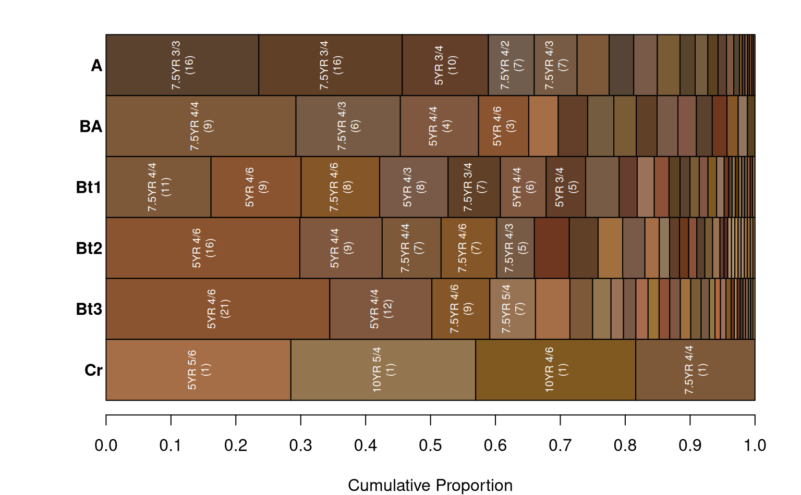
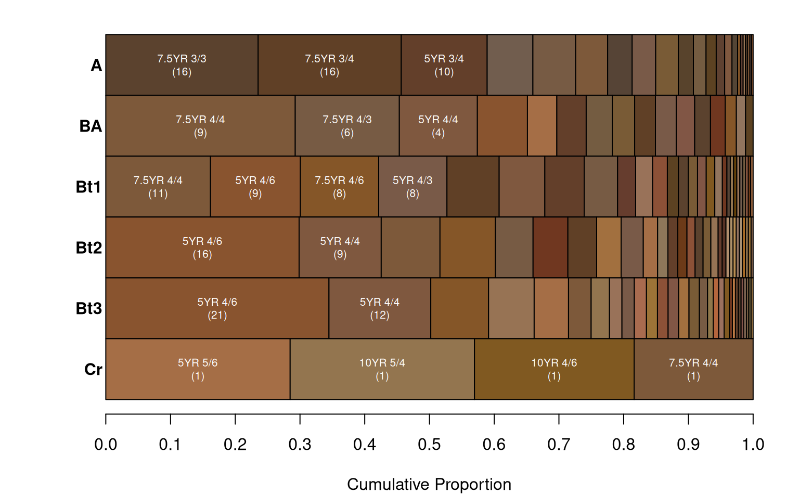

Generate a plot from summaries generated by aqp::aggregateColor().
aggregateColorPlot(
x,
print.label = TRUE,
label.font = 1,
label.cex = 0.65,
label.orientation = c("v", "h"),
buffer.pct = 0.02,
print.n.hz = FALSE,
rect.border = "black",
horizontal.borders = FALSE,
horizontal.border.lwd = 2,
x.axis = TRUE,
y.axis = TRUE,
...
)a list, results from aqp::aggregateColor()
logical, print Munsell color labels inside of rectangles, only if they fit
font specification for color labels
font size for color labels
label orientation, v for vertical or h for horizontal
extra space between labels and color rectangles
optionally print the number of horizons below Munsell color labels
color for rectangle border
optionally add horizontal borders between bands of color
line width for horizontal borders
logical, add a scale and label to x-axis?
logical, add group labels to y-axis?
additional arguments passed to plot
nothing, function called for graphical output
Tutorial at http://ncss-tech.github.io/AQP/sharpshootR/aggregate-soil-color.html.
# \donttest{
if(require(aqp) &
require(soilDB)) {
data(loafercreek, package = 'soilDB')
# generalize horizon names using REGEX rules
n <- c('Oi', 'A', 'BA','Bt1','Bt2','Bt3','Cr','R')
p <- c('O', '^A$|Ad|Ap|AB','BA$|Bw',
'Bt1$|^B$','^Bt$|^Bt2$','^Bt3|^Bt4|CBt$|BCt$|2Bt|2CB$|^C$','Cr','R')
loafercreek$genhz <- generalize.hz(loafercreek$hzname, n, p)
# remove non-matching generalized horizon names
loafercreek$genhz[loafercreek$genhz == 'not-used'] <- NA
loafercreek$genhz <- factor(loafercreek$genhz)
# aggregate color data, this function is from the `aqp` package
a <- aggregateColor(loafercreek, 'genhz')
# plot
op <- par(no.readonly = TRUE)
par(mar=c(4,4,1,1))
# vertical labels, the default
aggregateColorPlot(a, print.n.hz = TRUE)
# horizontal labels
aggregateColorPlot(a, print.n.hz = TRUE, label.orientation = 'h')
par(op)
}
#> Loading required package: aqp
#> This is aqp 2.1.0
#> Loading required package: soilDB


# }